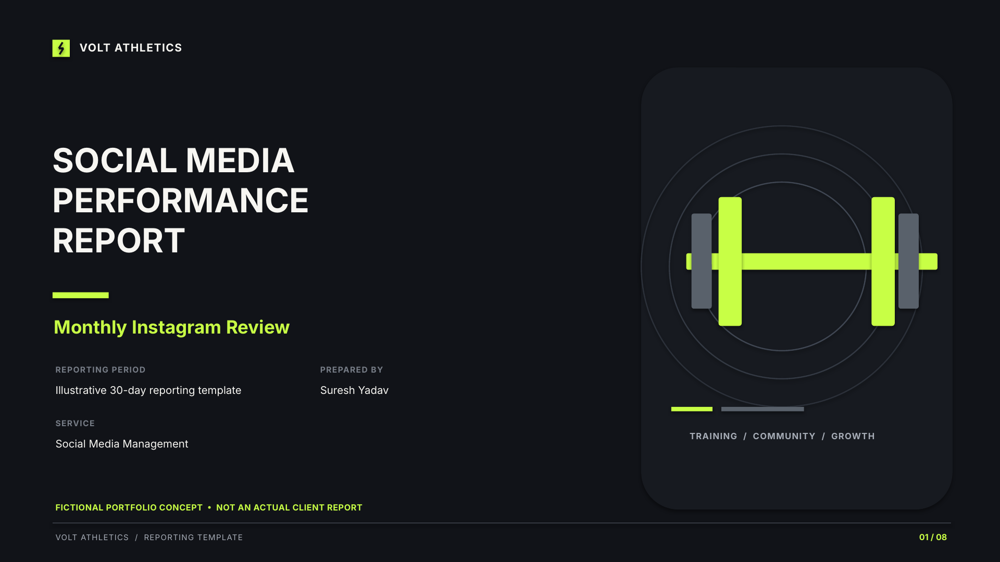

Project 05 · Analytics & Reporting
Social Media
Performance Report
An eight-slide monthly Instagram reporting template for VOLT ATHLETICS, a fictional fitness brand. The report demonstrates how to organise performance metrics, compare content, review audience engagement, track enquiries and plan the next reporting cycle.
Report Preview
Explore all eight slides of the reporting template.
Portfolio concept: VOLT ATHLETICS is fictional.
This is a reporting template, not an actual client report.
Placeholder metrics must be replaced with real Instagram Insights;
no campaign results or performance figures are claimed.